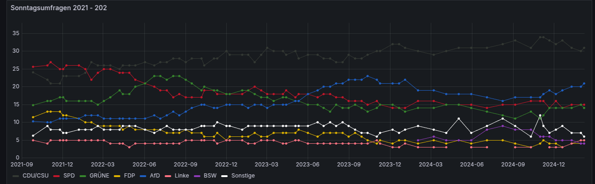

Umfragen zur Bundestagswahl: Mein Grafana-Dashboard zur Sonntagsfrage
Die Bundestagswahl 2025 rückt immer näher. Ich habe mich gefragt, wie sich die Umfragewerte seit der letzten Bundestagswahl entwickelt haben und ob sich Trends darin erkennen lassen. Dafür habe ich mir ein Dashboard in Grafana gebaut und die Werte zur sogenannten “Sonntagsfrage” visualisiert.
Datenquelle Infratest Dimap
Ich habe die Umfrageanbieter auf wahlrecht.de miteinander verglichen. Für mein Projekt habe ich mich für die Daten von Infratest Dimap entschieden. Zunächst habe ich die Daten in einer Excel-Tabelle gespeichert, die Prozentzeichen entfernt und dann in einem CSV abgelegt.

Warum Grafana?
Grafana ist ein Open-Source-Tool für die Visualisierung von Daten. Es wird oft für System-Monitoring und Business-Intelligence eingesetzt, aber ich verwende es hier für politische Daten. Gerade wenn es darum geht, langfristige Entwicklungen zu beobachten, bietet Grafana mit seinen Zeitreihen-Visualisierungen eine übersichtliche Lösung.
Heruasforderung beim CSV-Upload bei Grafana
Grafana ist vom UX-Design recht übersichtlich. Es lässt sich leicht ein neues Dashboard erstellen. Als ich mein CSV hochgeladen habe, kam zunächst eine Fehlermeldung: “Data is missing a number field”. Beim Debugging stellt sich heraus, dass Grafana die deutsche Datumsschreibweise wie “20.01.2024” nicht erkennt. Mit einem Python-Skript habe ich dann das Datum an das erwartete Format angepasst:
df["date"] = pd.to_datetime(df["date"], format="%d.%m.%Y").dt.strftime("%Y-%m-%d")Außerdem habe ich vorsichtshalber in den Daten auf deutsche Sonderzeichen verzichtet. Die bereinigten CSV-Daten habe ich “inline” eingegeben und dann lief die Visualisierung fehlerfrei.

Erkenntnisse aus den Daten
Seit der Bundestagswahl 2021 haben sich die Zustimmungswerte der Parteien in den Sonntagsfragen teils deutlich verändert. Ein Blick auf die Umfragereihen liefert ein spannendes Bild der aktuellen politischen Stimmung in Deutschland:
Ausgangslage: Wahlergebnis als Startpunkt
Die Datenreihen setzen jeweils bei den real erzielten Stimmanteilen der Bundestagswahl 2021 an, bevor sie in die fortlaufenden Umfragewerte übergehen. Dadurch wird deutlich, in welchem Maße sich die Zustimmung für jede Partei seit der Wahl verändert hat.
Deutliche Verluste bei den Regierungsparteien
Vergleicht man die aktuellen Umfragewerte mit den Wahlergebnissen, wird klar, dass alle Regierungsparteien (SPD, Grüne und FDP) mehr oder weniger stark an Zustimmung eingebüßt haben. Dabei fällt vor allem auf:
- SPD: War 2021 noch Wahlsiegerin, liegt heute jedoch spürbar hinter ihren ursprünglichen Wahlwerten zurück.
- Grüne: Konnten zeitweise Zugewinne verbuchen (insbesondere in Krisenzeiten wie zu Beginn des Ukraine-Kriegs), sanken dann aber wieder ab.
- FDP: Spürt im Vergleich zu ihrem Wahlergebnis einen besonders starken Abschwung, vor allem nachdem zentrale FDP-Forderungen in der Ampelkoalition nicht wie erhofft umgesetzt wurden.
CDU/CSU: Wechselseitige Dynamik mit der AfD
Die Union konnte anfangs von der Unzufriedenheit mit der Ampelkoalition profitieren und deutlich zulegen. Im weiteren Zeitverlauf ist allerdings eine auffällige Pendelbewegung zwischen CDU/CSU und AfD zu erkennen:
- Steigt die AfD, fällt in derselben Phase häufig die Union.
- Verbessert sich die CDU/CSU, verliert die AfD wieder etwas. Diese gegenläufige Entwicklung könnte darauf hindeuten, dass in Teilen ähnliche Wählerschichten angesprochen werden, die zwischen den beiden Parteien wechseln.

AfD: Kontinuierlicher Aufwärtstrend
Die AfD hat in den meisten Umfragen seit der Wahl zugelegt und profitiert offenbar davon, wenn die Zufriedenheit mit den etablierten Parteien sinkt. Bei Themen wie Inflation, Energiekrise oder Flüchtlingspolitik hat die AfD offenbar Wählerinnen und Wähler mobilisieren können, die zuvor entweder der Union oder dem Nichtwählerlager zugeneigt waren.
Linke und kleinere Parteien
Die Linke pendelt in den Umfragen zumeist nur knapp über der Fünf-Prozent-Hürde. Sie hat in den letzten Jahren an Profil eingebüßt und scheint bislang nicht stark von der aktuellen Unzufriedenheit mit der Regierung zu profitieren. Weitere kleine Parteien (z.B. BSW oder Sonstige) liegen mehrheitlich stabil auf niedrigem Niveau. Einzelne Ausschläge nach oben sind selten und eher von kurzfristigen Ereignissen abhängig.
Fazit
Mit Grafana lassen sich nicht nur technische oder wirtschaftliche Daten visualisieren, sondern auch politische Entwicklungen. Die Daten seit der Bundestagswahl 2021 machen deutlich, dass die Regierungsparteien aktuell unter Druck stehen und teils kräftig in den Umfragen verloren haben. Während die CDU/CSU zunächst auf Kosten der Ampelparteien zulegen konnte, teilt sie sich mittlerweile offenbar ein ähnliches Wählerreservoir mit der AfD: Steigt die eine Partei, verliert die andere. Diese Tendenz wird allerdings bei den letzten Umfragen im Februar 2025 durchbrochen, wo beide Parteien in den Umfragen zulegten. Insgesamt deuten die Umfragen auf eine stark polarisierte politische Stimmung hin, in der populistische Positionen momentan eher an Zustimmung gewinnen als sachpolitische Regierungsarbeit.
.